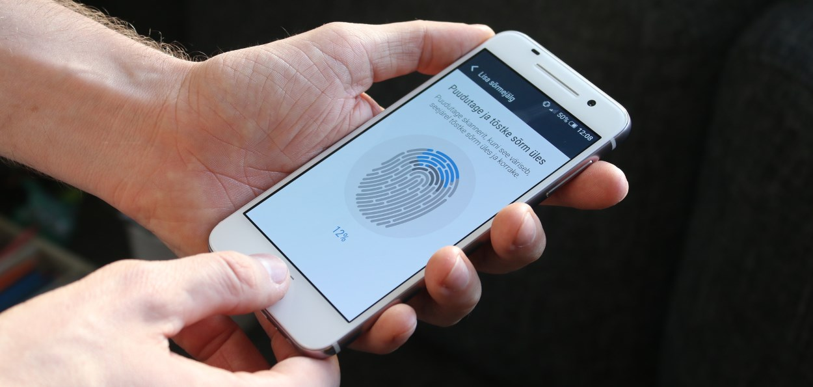
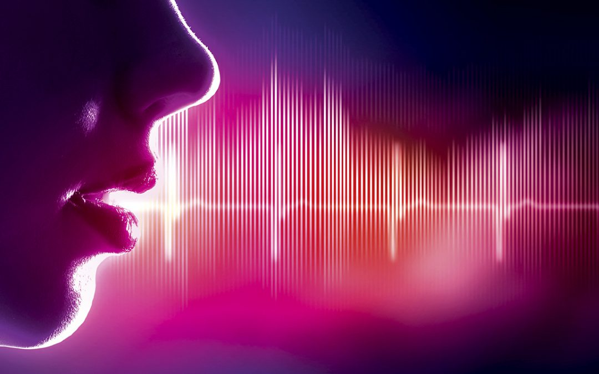

je nauka i tehnologija o merenju i analiziranju bioloških podataka. U Informacionim Tehnologijama, biometrija se odnosi na tehnologije koje mere i analiziraju karakteristike ljudskog tela kao što su DNK, otisci prstiju, mrežnjače i dužice oka, šabloni glasa, šabloni lica i mere ruke, za potrebe identifikacije.
Identifikacija putem biometrijske provere postaje sve učestalija u korporacijskim i javnim bezbednosnim sistemima, potrošačkoj elektronici i u POS (“Point of Sale” – prodajno mesto) upotrebi. Osim bezbednosti, pokretačka snaga biometrijskih provera je praktičnost.
Biometrija se prvenstveno primenjuje u zaštiti identiteta čoveka. Zasnovana je na merenju fizičkih karakteristika ljudi. Znatno je pouzdanija od lozinki, ali se i dalje vrše naučna istraživanja radi boljeg poboljsanja i radi daljeg istraživanja u ovoj oblasti.
Tipičan primer upotrebe biometrijske metode jeste upotreba prilikom pravljenja pasoša ili lične karte. Pored digitalnog potpisa, susrećete se sa otiskom prsta ili šake. Ljudi ispod 80 godina koji mogu još da drže olovku u ruci, nemaju problema sa potpisom, a ljudi koji imaju problema sa šakama, ili jednostavno nemaju mogućnost kontrole iste, ostavljaju otisak prsta kao ličnu autentifikaciju. Ovaj način autentifikacije je jedinstven.
Takodje upotreba skeniranja dužice oka ili prepoznavanje lica, jedne su od mnogih metoda biomtrijske autentifikacije. Mogu se naći u nekim velikim kompanijama koje poseduju takav složen inforacioni sistem koji poseduje precizne skenere i lako vrše proveru identiteta. U bogatijim zemljama postoje banke koje prizaju takodje mogućnost skeniranja dužice oka ili prepoznavanje lica.
Sa otiskom prsta se možemo sresti svaki dan. Većina pametnih telefona ima ugradjen senzor otska prsta na sebi pomoću kojeg možemo otključati svoj telefon, a drugi to ne mogu.
Identifikacija otiskom prsta je najčešće korišćena biometrijska tehnologija.Ovo je policijska metoda poznata od davnina, a verovatnoća da dva čoveka imaju isti otisak prstiju je jedan prema milijardu. Ovom metodom se prepoznaju jedinstvene karakteristike određenog otiska, koje su jedinstvene za svakog pojedinca i na taj način pomažu u prepoznavanju pojedinaca iz cele populacije. Otisci prstiju su svojstveni pojedincima i ne mogu se izgubiti niti ukrasti što ih čini vrlo tačnim i pouzdanim. Pouzdanost, dostupnost i pristojna cena su razlozi široke primene biometrije otisaka prstiju u različitim organizacijama.
Sistem za prepoznavanje na osnovu karakteristika lica je kompjuterska aplikacija za automatsku identifikaciju ili verifikaciju osobe sa digitalne slike ili video frame-a dobijenih iz video izvora. Jedan od načina da se ovo uradi jeste da se uporede određene crte lica sa slike i lica iz baze podataka.
Instalacija odgovarajuće mere bezbednosti kao što je biometrijsko prepoznavanje lica je napredan i efikasan alat koji nudi odličnu kontrolu i sigurnost u štićenom prostoru, bilo da se radi o banci, velikoj ili maloj firmi ili hotelu. Sistem precizno identifikuje određenu osobu skeniranjem crta lica, a ako se podudara sa snimljenom slikom u bazi podataka, odobren joj je pristup. To omogućava jednostavan i brz ulazak onima koji su dobrodošli u objekat, bez potrebe da daju lične podatke.
Pored toga što je ova metoda brza i efikasna, prepoznavanje lica je takođe pouzdano jer se pristupne kartice i ključevi mogu kopirati, pozajmljivati ili krasti, ali osoba ne može promeniti lice. Takođe mogu se pojačati mere kontrole, ograničavanjem pristupa određenim prostorijama.
Ljudsko oko nudi brojne mogućnosti za biometrijsku identifikaciju. Ovo uključuje merenja dužice oka, očnih vena i mrežnjače. Prepoznavanje skeniranjem mrežnjače je tehnologija koja za prepoznavanje koristi karakteristike krvnih sudova na dnu oka. To je najpouzdanija biometrijska metoda identifikacije. Do danas nije pronađen način da se mrežnjača falsifikuje, a njena osnovna karakteristika je da se ne menja tokom celog života osobe. Kada se radi skeniranje, oko treba bude blizu skenera i da se fokusira na jednu tačku.
Ova metoda se odvija brzo, ali nije 100% pouzdana. Jedan od problema je što je dužica oka relativno mala, pa mora da se fotografiše iz velike blizine (1 metar ili manje). Kod slikanja je veliki problem predstavljao odsjaj svetla, pa je zato mali broj slika imao uspešnu segmentaciju, takođe ova biometrijska metoda je dosta skupa.
Biometrijska autentikacija i identifikacija vena na dlanovima je atraktivna alternativa tehnologiji prepoznavanja lica. Autentikacija putem vena dlana je postupak utvrđivanja specifičnog rasporeda vena unutar dlana korisnika i njihovu upotrebu kao biometrijsku karakteristiku za utvrđivanje identiteta. Pošto se vena na dlanovima nalaze ispod ljudske kože, vrlo je teško kopirati ili ukrasti nečiji uzorak vena, što znači da je falsifikovanje u normalnim uslovima veoma teško.
Pored mašina koje raspored vena u dlanu analiziraju kontaktnim putem, razvijeni su i bezkontaktni sistemi koji snimaju raspored vena tako što korisnik prikaže dlan kameri. Istina je da efikasnost ovih sistema može zavisiti od svetlosnih uslova, ali su informacije koje koje su predmet analize svakako sigurnije i teže ih je lažirati.
Biometrijska autentikacija putem glasa svodi svaku izgovorenu reč na segmente sastavljene od nekoliko dominantnih frekvencija koje se nazivaju formanti. Svaki segment ima nekoliko tonova koji se mogu snimiti u digitalnom formatu. Tonovi se analiziraju i kolektivno identifikuju jedinstveni govorni otisak. Glasovni šabloni se čuvaju u bazama podataka na način sličan skladištenju otisaka prstiju ili drugih biometrijskih podataka.
Provera glasa uključuje analizu do 100 jedinstvenih karakteristika audio zapisa glasa i poređenje rezultata sa sačuvanim glasovnim šablonom u bazi. Rezultat je signalizacija rezultata ako je upoređivanje glasa bilo visoko tačno (zeleno), moguće tačno (žuto) ili vrlo netačno (crveno).
Najveća mana ovog sistema jeste činjenica da ljudi glas koriste ne samo za razmenu informacija, već i za iskazivanje emocija, koje mogu ometi sistem u stepenu preklapanja snimljenog i sačuvanog šablona.